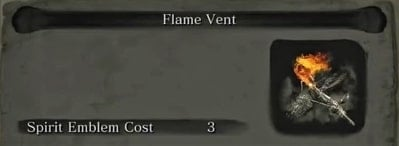
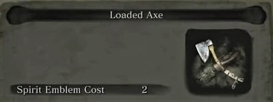
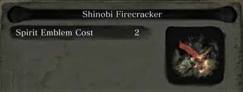
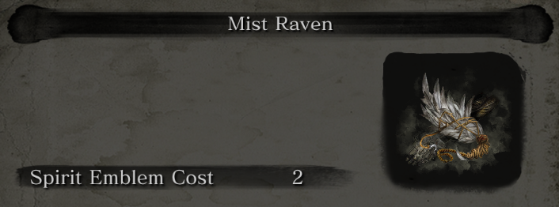
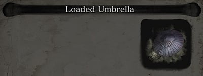
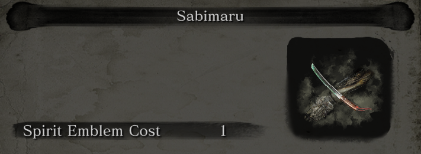
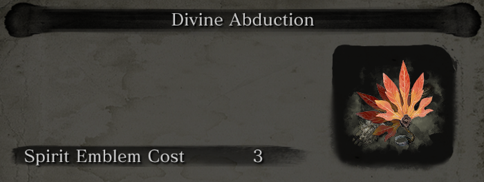
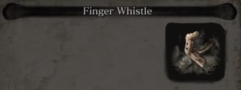

Loaded Shuriken
 A small yet deadly ranged weapon, 'shuriken' translates literally as 'hidden hand blade'.
A small yet deadly ranged weapon, 'shuriken' translates literally as 'hidden hand blade'.
Flame Vent
 A device that spills a wave of fire, attacking enemies and leaving your weapon coated in fire.
Loaded Axe
 A heavy axe that deals punishing blows capable of completely breaking wooden shields, and an enemy's guard.
Shinobi Firecracker
 A heavy axe that deals punishing blows capable of completely breaking wooden shields, and an enemy's guard. A Prosthetic tool fitted with Robert's Firecrackers that unleashes an explosive flash.
Loaded Spear
A Prosthetic tool fitted with Gyoubu's Broken Horn that unleashes far-reaching thrust attacks and drags enemies towards the wielder.
Mist Raven
 A Prosthetic Tool loaded with the feather of a Mist Raven.
Loaded Umbrella
 A Prothetic Tool created by fitting an indestructible Iron-ribbed Umbrella to the Arm. Costs spirit emblems to use.
Sabimaru
 A Prosthetic Tool made with the blade Sabimaru, allowing for a quick series of attacks together with the sword.
Divine Abduction
 A Prosthetic Tool loaded with a large fan. Costs Spirit Emblems to use.
Finger Whistle
 A Prosthetic Tool created by fitting a slender finger to the Prosthetic